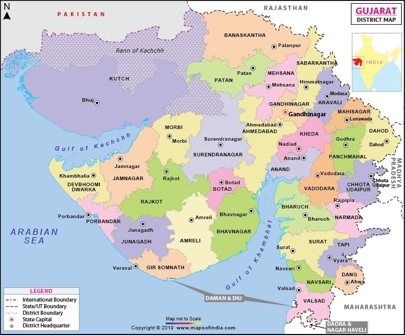

Glimpses of Culture


Culture of Color, Dance & Devotion
Gujarat is famous for its vibrant festivals, Garba dance, rich handicrafts, spiritual heritage, and warm hospitality. It reflects simplicity, discipline, and joyful traditions.
Capital: Gandhinagar
Birthplace of Mahatma Gandhi
Home to the Asiatic Lion in Gir Forest
Famous for Garba, Bandhani textiles, and White Desert of Kutch
Major Language: Gujarati
The world's tallest statue, dedicated to Sardar Vallabhbhai Patel, located near Kevadia.
View on MapA vast white salt desert famous for its breathtaking landscapes and the annual Rann Utsav.
View on MapOne of the twelve Jyotirlingas and among India's most revered pilgrimage destinations.
View on MapGujarat’s folk and traditions are vibrant, joyful, and deeply rooted in community life. Folk dances like **Garba** and **Dandiya Raas** celebrate devotion and togetherness, especially during Navratri. Traditional music, colorful attire, handicrafts, and festivals reflect simplicity, discipline, and cultural pride. Through its customs and celebrations, Gujarat preserves a rich heritage that blends spirituality with everyday life.
